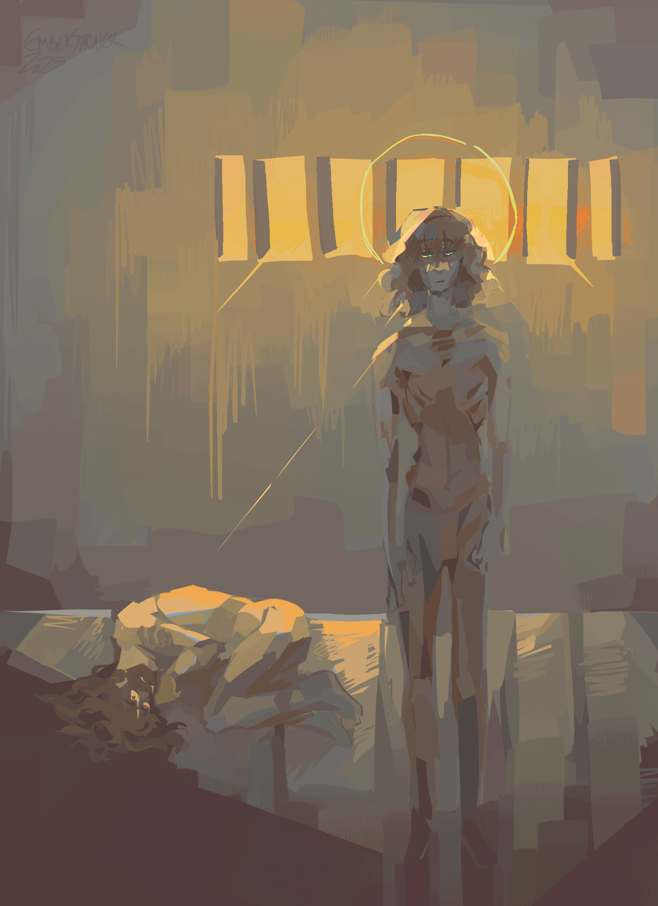
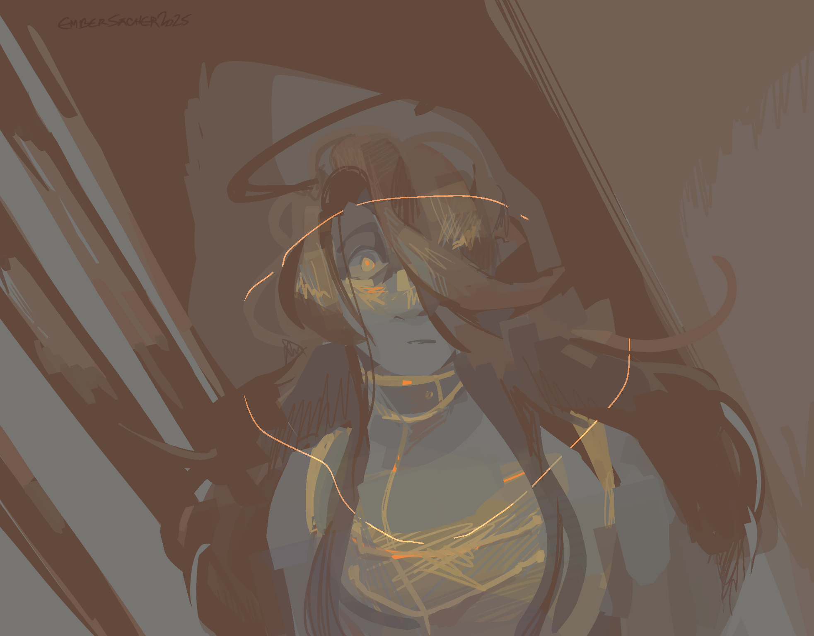

savior
original creation date: feb 11-mar 3, repainted version created: apr 9-may 3
characters featured: isra (and isra), marcene
very vague centuriae lore that myself and only myself can understand. he was never actually naked in this scene, it's moreso something something uhh rebirth something...
the first image is a repainting of an earlier iteration of the same artwork from feb-march that i hated SO much. the original did not match my expectations and was just....... so PLAIN and FLAT, and after uploading it to the site, i was overcome with suuch a visceral sense of shaaame: this scene is so important, i CANNOT fumble its only depiction on this site so far. the original is one of the few arts on this site that i cannot stand to look at, and yet i i can't delete it bc i wanna honor the site mission statement......ack...... and so, to remedy this, i spent the entire month of april on-and-off re-painting it. and i'm DONE now.
i adore the colors in this newer version - it's certainly more consistent, mystifying, yet simultaneously..... more palatable? the latter of which i'm unsure is a thing i want for it. i'll admit i wasn't able to re-capture some of the visceral emotion present in the original: the one thing that bums me out. (i redrew the faces so many times until i gave up and left them as is.) i can give the OG that amount of credit, it's weird and uncanny. even w all that though, i still DO like the repainting way better. much more prouder of this one. marcene stays as she is though. hi mama.
click here to see the old version but just know that I WOULD RATHER YOU NOT, LOL. the commentary in this page has also been rewritten from the original written & uploaded on march 4. see below for the old commentary.
click here to read the old commentary
he was never actually naked in this scene, it's moreso something something uhh rebirth something...
aghh i wanted to do messy crosshatching, i feel like i used to do that good. but unlike my 2021 self i do NAWT have the patience, which unfortunately is the ONE thing u need if u wanna do good crosshatching. okayy scratch that, the SECOND illust here is good cross-hatching, the first is ass and balls because it was a tougher scene to draw i'm ngl. ack.... this sequence of illusts is mildly embarrassing to me as well. i get like that whenever i try to share lore. OH WELL.......
art-wise i love the 2nd one but the 1st one peeves me a LOT. at the time i was somewhat proud of it, but now it looks a little odd to me. feel like i would have liked both the visuals and the process more if i'd just. painted normally. i think this subject matter woulda looked rly good as a painting too. i don't want to revisit it though, it was hard enough to draw the first time LOL